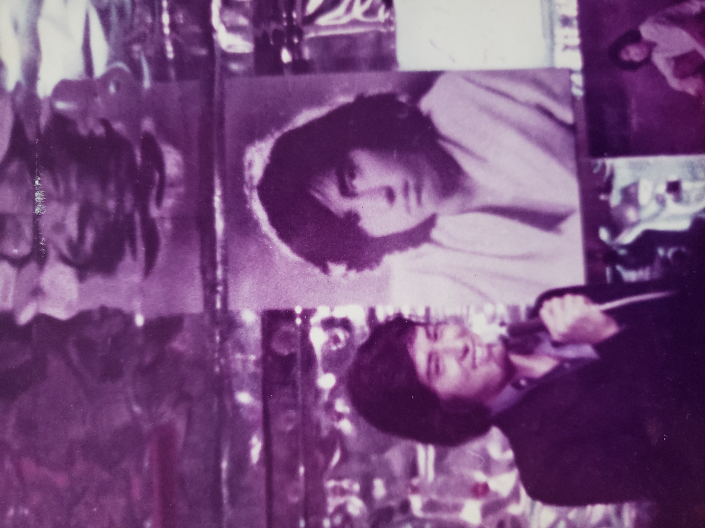
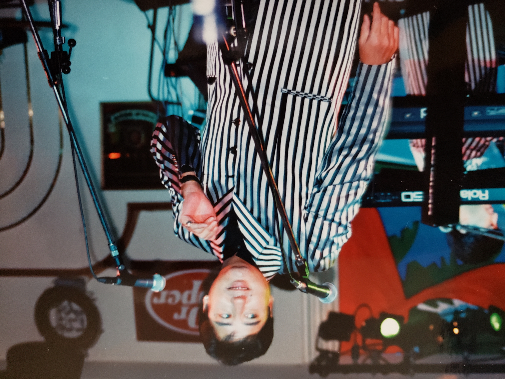
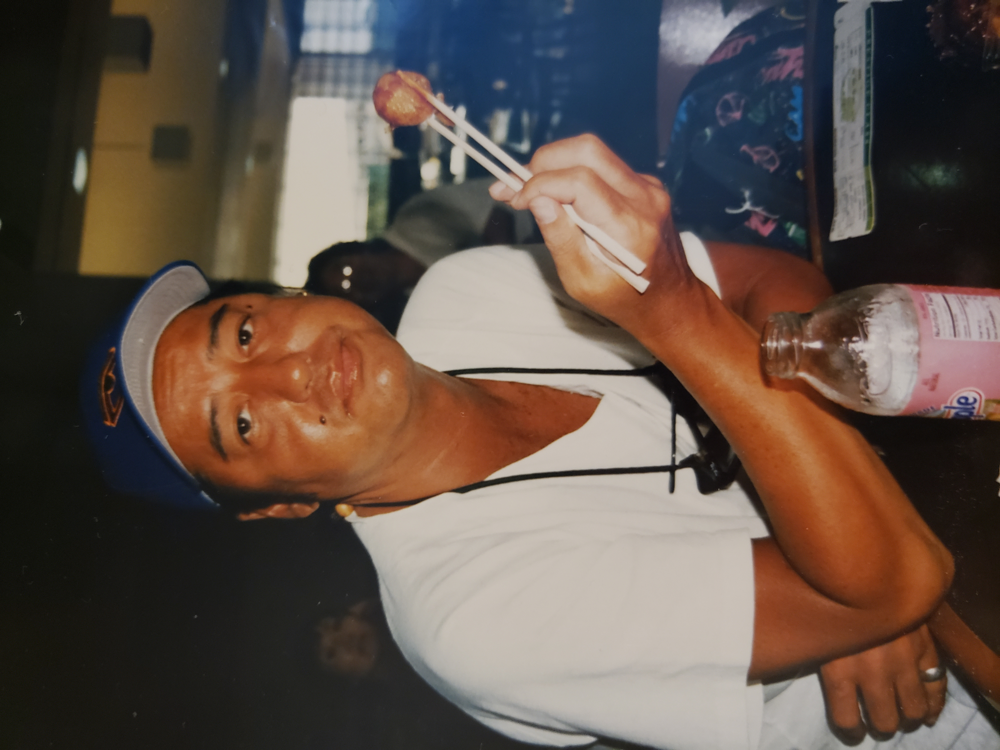
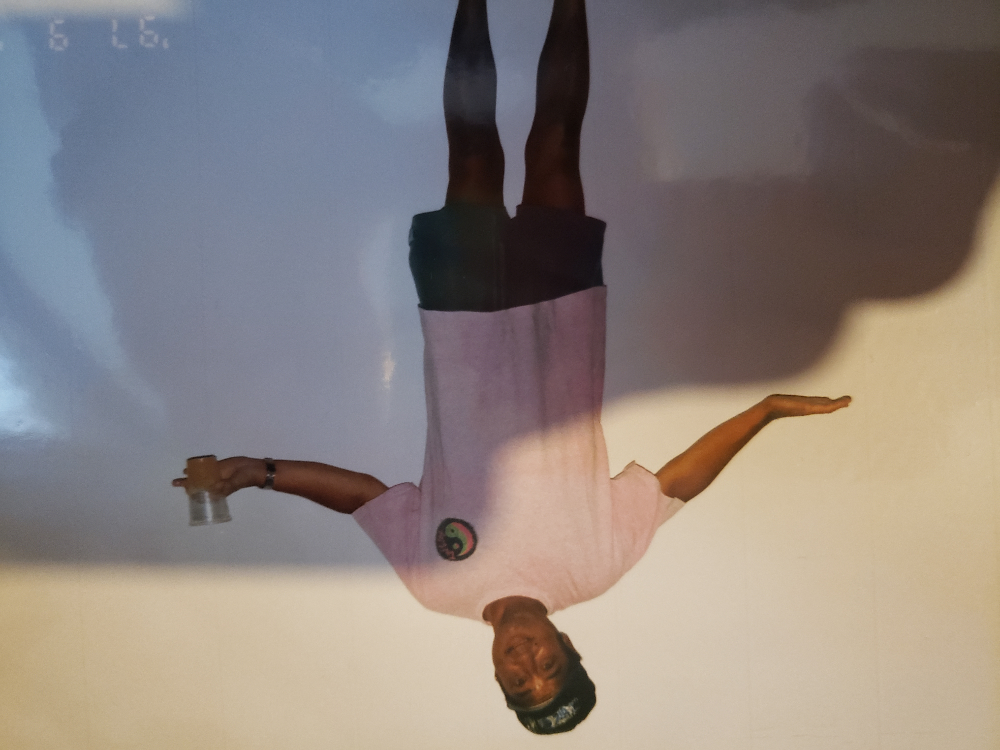

My Brother / 兄
This page keeps special memories of my brother. His music, smile, kindness, and the beautiful time we shared will always remain in my heart.
このページには、兄との大切な思い出を残しています。 兄の音楽、笑顔、優しさ、そして一緒に過ごした時間は、今でも私の心の中に残っています。



